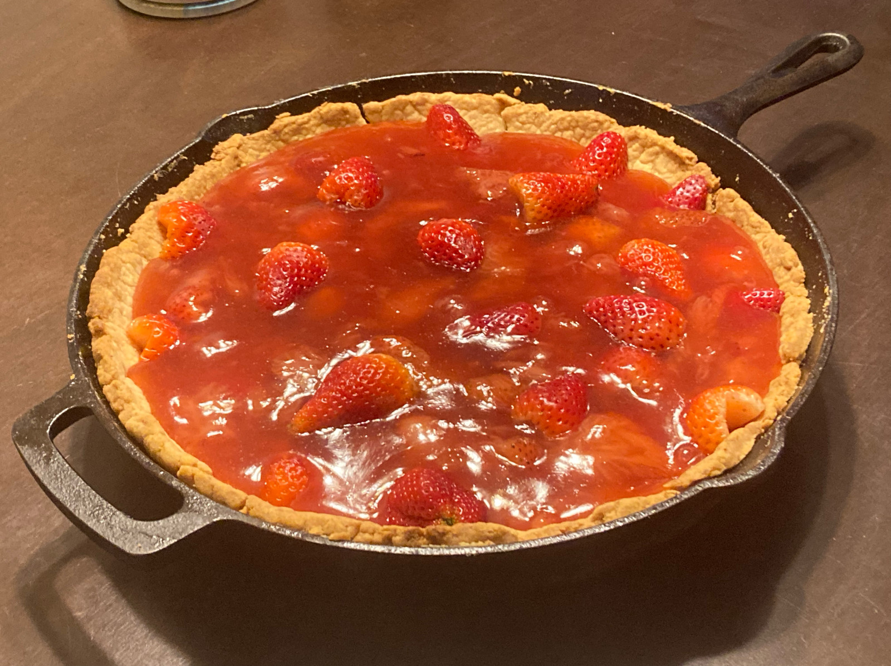

Strawberry Pie

Description
This strawberry pie consists of fresh strawberries and a strawberry compote for the filling. Not much baking is involved since the filling is not supposed to be baked, however, the pie crust needs to be blind baked.
Ingredients
| 1 blind baked pie crust | 2 quarts or 8 cups of strawberries (hulled) | 1 and 3/4 cups of granulated sugar |
| 16 teaspoons of cornstarch | 4/3 cups of water | 1 cup of heavy whipping cream |
Tools
| pie plate | medium pot | medium bowl | whisk |
| solid spatula | full cup | 1/3 cup | 1/4 cup |
| full tablespoon | full teaspoon |
Instructions
Pie Filling
- Arrange half of the strawberries in the baked pie crust and place the remaining strawberries in a medium pot.
- Add 3/4 cups of sugar to the pot, place over medium heat and bring it to a boil stirring frequently.
- Whisk corn starch and water together in a small bowl. Gradually stir the cornstarch mixture into boiling strawberry mixture.
- Once all the cornstarch has been added, reduce the heat and simmer the mixture until it has thickened, about 10 minutes, stirring constantly.
- Pour the strawberry mixture into the pie crust over the strawberries previously placed inside.
- Refrigerate until chilled and set, at least 3 hours.
Pie Topping
- Whip the heavy cream in a medium bowl until soft peaks form.
- Optionally, you can add a little bit of sugar to the cream, around a tablespoon.
00:00
minutes:
seconds: